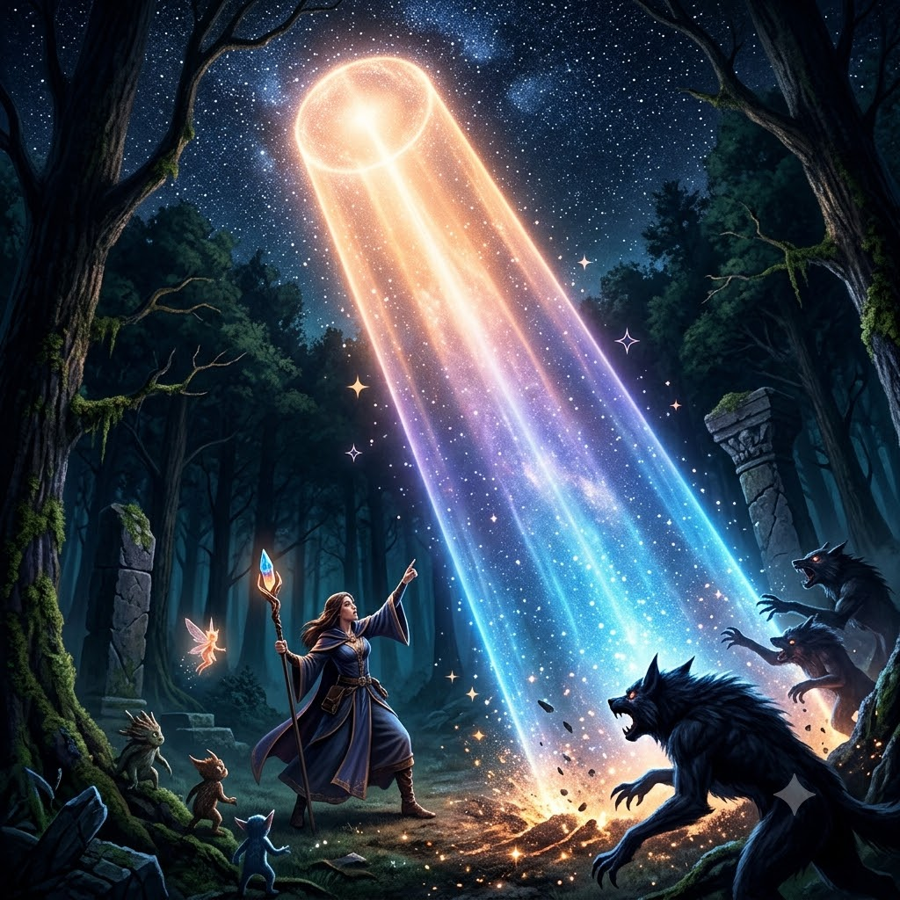
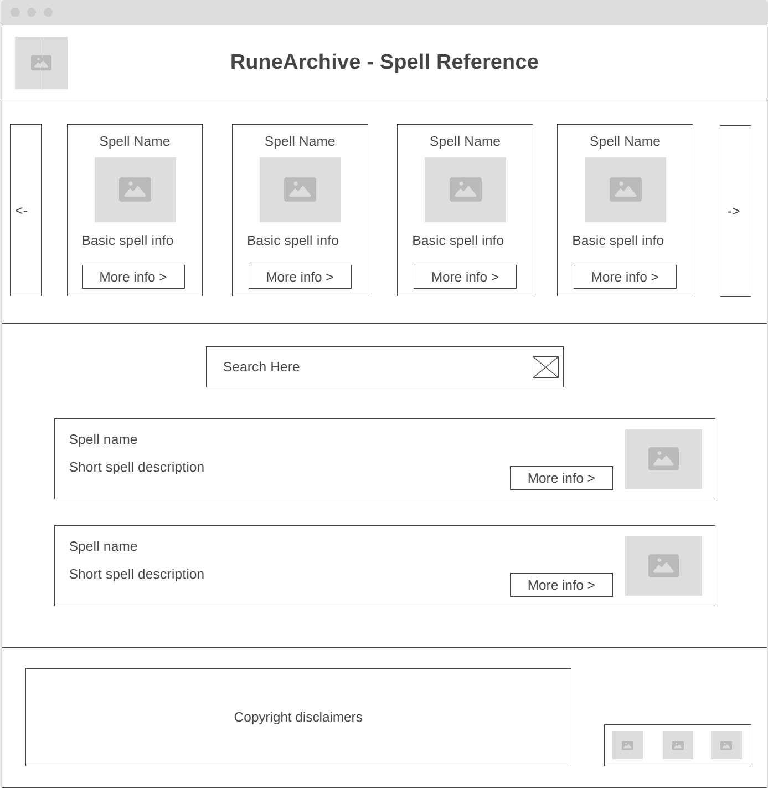
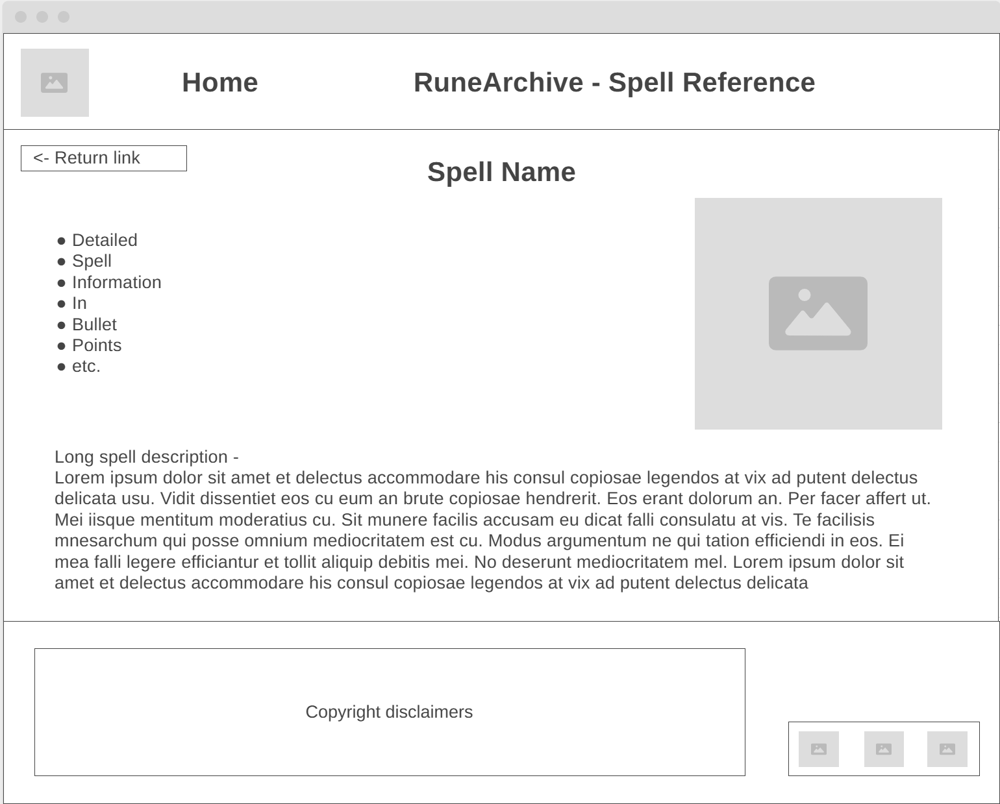

Overview
Purpose
The purpose of this website is to provide a simple reference enabling access to information on common D&D spells. By providing a dynamic, searchable listing, this information will be simple to access and easy to understand.
Audience
Guests of this website will be those needing information on D&D spells, whether for research purposes or as part of actually playing. This could include Game Masters, avid players, those just starting to play, or even those who are just looking into it.
Dynamic elements
The dynamic elements of this page will include a listing of spells populated from a JavaScript object as the page loads. This list will scroll horizontally using left and right buttons with event listeners. Below it will be a search area that will allow filtering of spells based on a search term using array methods. Each spell will have a link to a subpage that will dynamically be populated with more detailed spell information based on a value passed as part of the subpage URL.
Branding
Website Logo
Image generated by Google Gemini AI
Style Guide
Color Palette
Palette URL: https://coolors.co/161920-e7cd8c-5aa8d9-b589db-ffffff| Primary | Secondary | Accent 1 | Accent 2 |
|---|---|---|---|
| #161920 | #E7CD8C | #5AA8D9 | #B589DB |
Pseudocode for your project
Horizontally scrolled spell list:
- Function that runs on page load to populate 'cards' with spell info
- Function bound to event listener on left and right buttons to scroll left and right
Spell search region:
- Event listener bound to enter key and search button that takes the search term from an input object and uses the filter and sort methods on the spell list object.
- Render spells function called by the event listener that pulls data from the object and appends it to the innerHTML of a wrapper object.
Subpage spell info display:
- Code to retrieve the spell name passed in the URL
- A render function that finds that spell and plugs the data from it into an HTML literal that is then appended to a wrapper object to display on the screen.
Content
Welcome to this D&D spell reference page. Find or search for a spell below and select it to see more information
(All other content on the website will be spell information.)
Spell name: Magic Missile
Level: 1st
School: Evocation
Casting Time: 1 action
Range: 120 feet
Components: V, S
Duration: Instantaneous
Short Description: Magic darts of glowing force
Long Description: You create three glowing darts of magical force. Each dart strikes a creature of your
choice that you can see within range. A dart deals 1d4 + 1 Force damage to its target. The darts all strike
simultaneously, and you can direct them to hit one creature or several.
At Higher Levels: The spell creates one more dart for each spell slot level above 1.

Spell name: Fireball
Level: 3rd
School: Evocation
Casting Time: 1 action
Range: 150 feet
Components: V, S, M (a tiny ball of bat guano and sulfur)
Duration: Instantaneous
Short Description: A big ball of fire
Long Description: A bright streak flashes from you to a point you choose within range and then blossoms with
a low roar into a fiery explosion. Each creature in a 20-foot-radius Sphere centered on that point makes a
Dexterity saving throw, taking 8d6 Fire damage on a failed save or half as much damage on a successful one. The
fire spreads around corners. It ignites flammable objects in the area that aren't being worn or carried.
At Higher Levels: When you cast this spell using a spell slot of 4th level or higher, the damage increases
by 1d6 for each slot level above 3rd.

Spell name: Moonbeam
Level: 2nd
School: Evocation
Casting Time: 1 action
Range: 120 feet
Components: V, S, M (several seeds of any moonseed plant and a piece of opalescent feldspar)
Duration: Concentration, up to 1 minute
Short Description: A searing beam of light from above.
Long Description: A silvery beam of pale light shines down in a 5-foot-radius, 40-foot-high Cylinder centered on a
point within range. Until the spell ends, Dim Light fills the Cylinder, and you can take a Magic action on later
turns to move the Cylinder up to 60 feet. When the Cylinder appears, each creature in it makes a Constitution saving
throw. On a failed save, a creature takes 2d10 Radiant damage, and if the creature is shape-shifted (as a result of
the Polymorph spell, for example), it reverts to its true form and can't shape-shift until it leaves the Cylinder.
On a successful save, a creature takes half as much damage only. A creature also makes this save when the spell's
area moves into its space and when it enters the spell's area or ends its turn there. A creature makes this save
only once per turn.
At Higher Levels: When you cast this spell using a spell slot of 3rd level or higher, the damamge increases by 1d10
for each slot level above 2nd

Spell name: Cure Wounds
Level: 1st
School: Evocation
Casting Time: 1 action
Range: Touch
Components: V, S
Duration: Instantaneous
Short Description: A magic burst of healing.
Long Description: A creature you touch regains a number of Hit Points equal to 2d8 plus your spellcasting
ability modifier.
At Higher Levels: When you cast this spell using a spell slot of 2nd level or higher, the healing increases
by 1d8 for each slot level above 1st.
Spell name: Mage Hand
Level: Cantrip
School: Conjuration
Casting Time: 1 action
Range: 130 feet
Components: V, S
Duration: 1 Minute
Short Description: Magic darts of glowing force
Long Description: A spectral, floating hand appears at a point you choose within range. The hand lasts for the
duration. The hand vanishes if it is ever more than 30 feet away from you or if you cast this spell again. When
you cast the spell, you can use the hand to manipulate an object, open an unlocked door or container, stow or
retrieve an item from an open container, or pour the contents out of a vial. As a Magic action on your later
turns, you can control the hand thus again. As part of that action, you can move the hand up to 30 feet. The
hand can't attack, activate magic items, or carry more than 10 pounds.
Wireframes
Landing page
Horizontal spell listing will show fewer spells on smaller screens to be mobile-friendly. Search listings will also change format. All links to the sub-page will be associated with specific spells.

Spell Details Page
Will receive spell to display from the page URL and dynamically adjust. Formatting will adjust on smaller screens to remain mobile-friendly.
